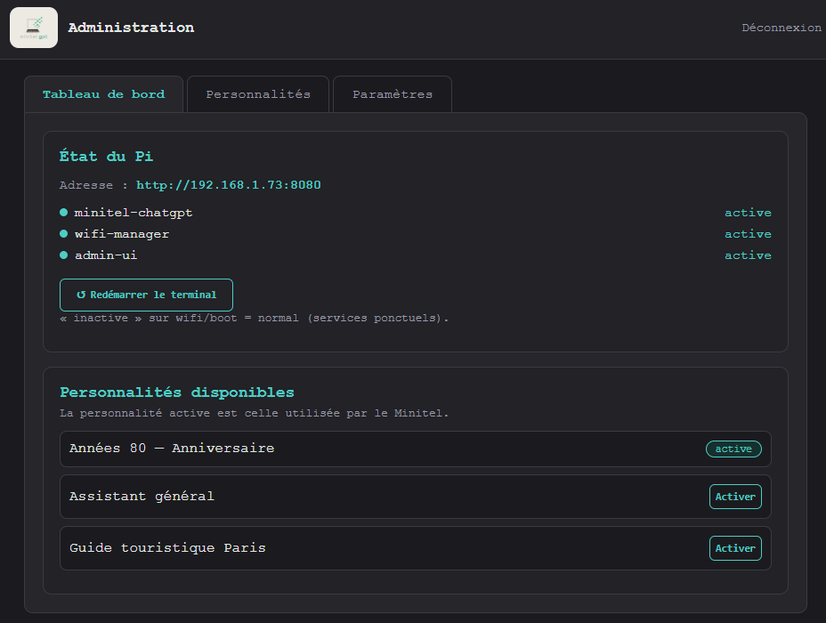
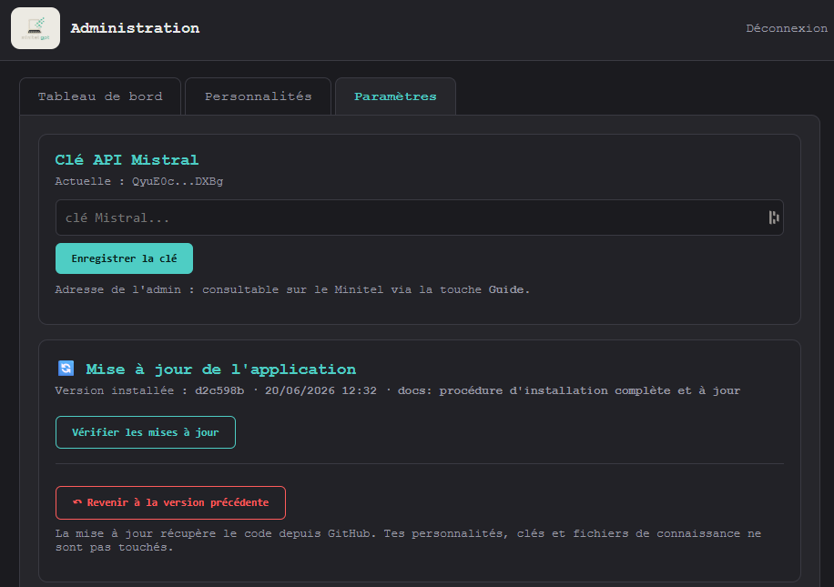

Y accéder
Le Raspberry héberge un petit site d'administration, accessible depuis n'importe quel appareil du même réseau.
- Ouvrez
http://<adresse-du-pi>:8080dans un navigateur. - L'adresse IP du Pi s'affiche directement sur le Minitel en appuyant sur la touche Guide.
- Un mot de passe protège l'accès (modifiable). Aucun écran ni clavier branché sur le Pi n'est nécessaire.
Tableau de bord
D'un coup d'œil : l'état des services (terminal, WiFi, administration), un bouton pour redémarrer le terminal, et la liste des personnalités disponibles.
La personnalité active - celle avec laquelle dialogue le Minitel - se change en un clic.


Personnalités
Le cœur du projet : créez, modifiez et supprimez les personnalités de votre assistant. Pour chacune : un nom, les textes d'accueil affichés sur le Minitel, et le prompt système qui définit son caractère et son périmètre.
- Génération assistée par IA : décrivez l'idée, l'IA rédige les consignes.
- Zone de test : essayez vos requêtes directement depuis le navigateur, sans le Minitel.
- Fichiers de connaissance (.txt) injectés dans le contexte pour nourrir la personnalité.
De quoi créer la personnalité de votre choix : une mascotte d'anniversaire, un guide pour un événement pro, un compagnon pour les enfants…
Paramètres & mises à jour
On y choisit le fournisseur d'IA - Mistral ou Claude - avec, pour chacun, sa clé API et son modèle (coût et pertinence indiqués). Les clés se créent sur admin.mistral.ai pour Mistral et platform.claude.com pour Claude. On y consulte aussi les journaux du terminal.
Surtout, l'application se met à jour en un clic depuis GitHub : vérification des nouveautés, installation, et retour à la version précédente si besoin - le tout sans jamais toucher à vos personnalités ni à vos réglages.

✅ Autonome de bout en bout
Configuration, personnalités et mises à jour : tout se fait depuis le navigateur. Le code complet et la procédure d'installation sont sur GitHub.